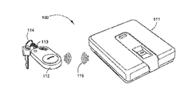

Reference 1

In an age where electronic devices and transactions are prevalent, safe-guarding data has become an important issue, thus giving rise to a myriad of security systems. Two of the common security systems used are password and personal identification (PIN) systems. Password systems require a user to provide the authentication system with a username and a password (both of which are unique to the user). PIN systems on the other hand usually require a user to provide a code, usually referred to as the PIN code, for authentication purposes. Both the password and the PIN system can prove to be a nuisance to users in the event they forget their password or PIN code. Moreover, a user A can easily impersonate another